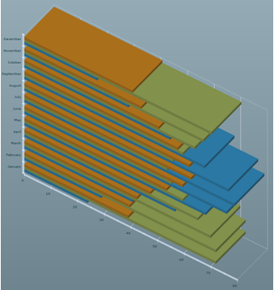
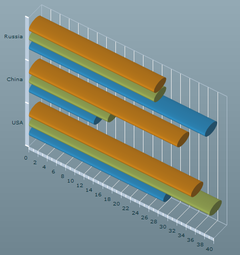

A 3D bar chart is very similar to a column chart except
that it draws the bars horizontally instead of vertically. As such,
the horizontal and vertical axes or values are inverted. A bar chart
contains a set of
BarSeries3D classes
that connect to the chart
dataProvider.
The following code shows the creation of a 3D bar chart.
<?xml version="1.0" ?>
<mx:Application xmlns:mx="http://www.adobe.com/2006/mxml"
xmlns:ilog="http://www.ilog.com/2007/ilog/flex">
<mx:Script>
<![CDATA[
import mx.collections.ArrayCollection;
[Bindable]
public var temperature:ArrayCollection = new ArrayCollection([
{Month:"January", London:39, Sydney:71.8, Beijing:23.7},
{Month:"February", London:39.6, Sydney:71.8, Beijing:28.8},
{Month:"March", London:42.3, Sydney:69.8, Beijing:40.5},
{Month:"April", London:47.3, Sydney:65.1, Beijing:56.5},
{Month:"May", London:53.4, Sydney:59.5, Beijing:68},
{Month:"June", London:59.4, Sydney:55.2, Beijing:75.9},
{Month:"July", London:62.6, Sydney:53.6, Beijing:78.8},
{Month:"August", London:61.9, Sydney:55.8, Beijing:76.5},
{Month:"September", London:57.6, Sydney:59.5, Beijing:67.6},
{Month:"October", London:50.5, Sydney:63.9, Beijing:54.7},
{Month:"November", London:43.9, Sydney:67.1, Beijing:39},
{Month:"December", London:40.6, Sydney:70.2, Beijing:27.3}]);
]]>
</mx:Script>
<ilog:BarChart3D width="100%" height="100%"
dataProvider="{temperature}" showDataTips="true">
<ilog:verticalAxis>
<mx:CategoryAxis categoryField="Month"/>
</ilog:verticalAxis>
<ilog:series>
<ilog:BarSeries3D xField="London" yField="Month" />
<ilog:BarSeries3D xField="Sydney" yField=" Month " />
<ilog:BarSeries3D xField="Beijing" yField="Month" />
</ilog:series>
</ilog:BarChart3D>
</mx:Application>
The following figure shows how the bar chart coded above
is rendered.

The
BarChart3D class shares
its properties with
ColumnChart3D and as
such can use the
clustered (default),
overlaid,
stacked, or
100% types, or can be configured using
BarSet3D objects.
Cylinder representation
To switch from the default cuboid representation of the
bar to a cylinder representation, use the
form attribute of the
BarSeries3D class.
The following example in MXML shows the use of the form attribute in a bar chart.
<mx:Application xmlns:mx="http://www.adobe.com/2006/mxml"
xmlns:ilog="http://www.ilog.com/2007/ilog/flex">
<mx:Script>
<![CDATA[
import mx.collections.ArrayCollection;
[Bindable]
private var medalsAC:ArrayCollection = new ArrayCollection( [
{ Country: "USA", Gold: 35, Silver:39, Bronze: 29 },
{ Country: "China", Gold: 32, Silver:17, Bronze: 14 },
{ Country: "Russia", Gold: 27, Silver:27, Bronze: 38 } ]);
]]>
</mx:Script>
<ilog:BarChart3D width="100%" height="100%" depth="10"
showDataTips="true" dataProvider="{medalsAC}">
<ilog:verticalAxis>
<mx:CategoryAxis categoryField="Country"/>
</ilog:verticalAxis>
<ilog:series>
<ilog:BarSeries3D yField="Country" xField="Gold" displayName="Gold"
form="cylinder"/>
<ilog:BarSeries3D yField="Country" xField="Silver" displayName="Silver"
form="cylinder"/>
<ilog:BarSeries3D yField="Country" xField="Bronze" displayName="Bronze"
form="cylinder"/>
</ilog:series>
</ilog:BarChart3D>
</mx:Application>
This MXML example of cylinder representation for a bar
chart renders as shown in the following figure.
